|
Zehui LiaoPh.D. CandidateAffiliation: School of Computer Science and Engineering, Northwestern Polytechnical UniversityCurrent Address: No.1, Dongxiang Road, Chang'an District, Xi'an, Shaanxi, China Email: merrical@mail.nwpu.edu.cn Google Scholar • Semantic Scholar • GitHub |
Biography
- Introduction
- Education Background
- 2020.09-Present • Ph.D. Candidate • Supervisor: Prof. Yong Xia.
- 2016.09-2020.06 • B.E. Degree • Supervisor: Prof. Yong Xia.
-
I am a fourth-year Ph.D. student at National Engineering Laboratory for Integrated Aero-Space-Ground-Ocean Big Data Application Technology, School of Computer Science and Engineering, Northwestern Polytechnical University (NPU), China.
My research focuses on deep learning techniques for medical image analysis, with particular interests in hallucination detection in medical MLLMs, learning with label noise, and domain adaptation.
School of Computer Science and Technology, Northwestern Polytechnical University, China
School of Computer Science and Technology, Northwestern Polytechnical University, China
News
Representative Publications
-
* indicates corresponding authorship and † indicates equal contribution.
Hallucination Detection in Medical MLLMs
| 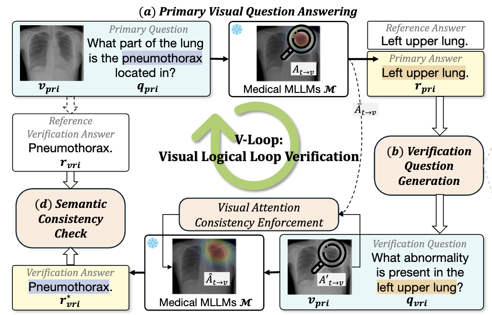 | Mengyuan Jin†, Zehui Liao†, and Yong Xia* V-Loop: Visual Logical Loop Verification for Hallucination Detection in Medical Visual Question Answering arXiv preprint arXiv:2601.18240. [Paper] |
| 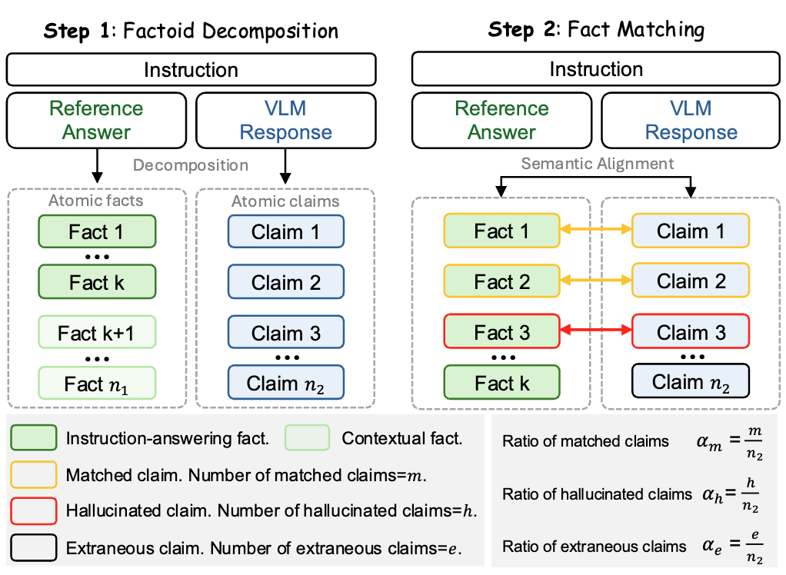 | Zehui Liao†, Shishuai Hu, Ke Zou, Mengyuan Jin, Yanning Zhang, Huazhu Fu, Liangli Zhen*, and Yong Xia* UniVRSE: Unified Vision-conditioned Response Semantic Entropy for Hallucination Detection in Medical Vision-Language Models arXiv preprint arXiv:2503.20504. [Paper, Code] |
| 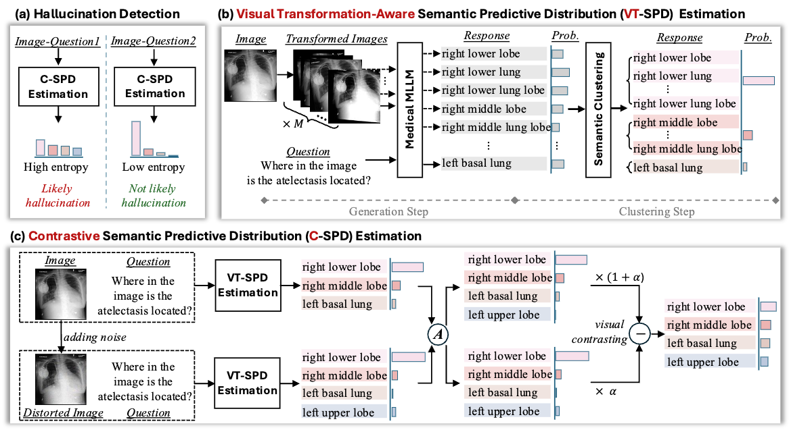 | Zehui Liao†, Shishuai Hu†, Ke Zou, Huazhu Fu, Liangli Zhen*, and Yong Xia* Vision-Amplified Semantic Entropy for Hallucination Detection in Medical Visual Question Answering MICCAI 2025. [Paper, Code] |
Learning with Label Noise for Medical Image Analysis
| 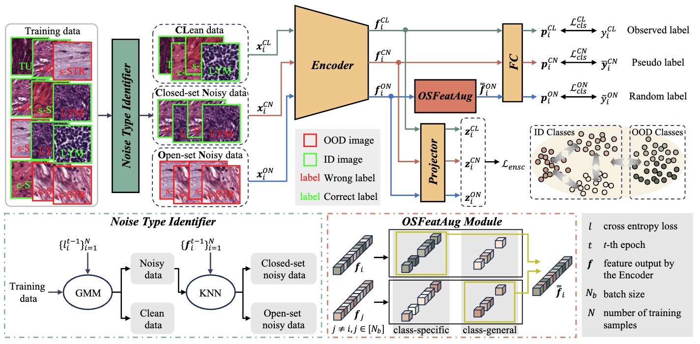 | Zehui Liao, Shishuai Hu, Yanning Zhang, and Yong Xia* Unleashing the Potential of Open-set Noisy Samples Against Label Noise for Medical Image Classification Medical Image Analysis, 2025. [Paper, Code] |
 |
Zehui Liao, Shishuai Hu, Yutong Xie, and Yong Xia* Instance-dependent Label Distribution Estimation for Learning with Label Noise International Journal of Computer Vision, 2024. [Paper, Code] |
| 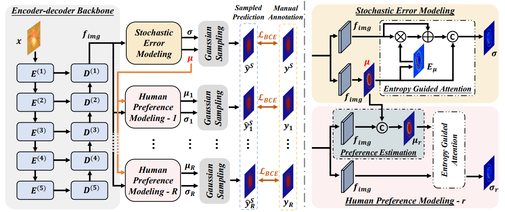 | Zehui Liao†, Shishuai Hu†, Yutong Xie, and Yong Xia* Modeling Annotator Preference and Stochastic Annotation Error for Medical Image Segmentation Medical Image Analysis, In Press, 2023. [Paper, Code] |
| 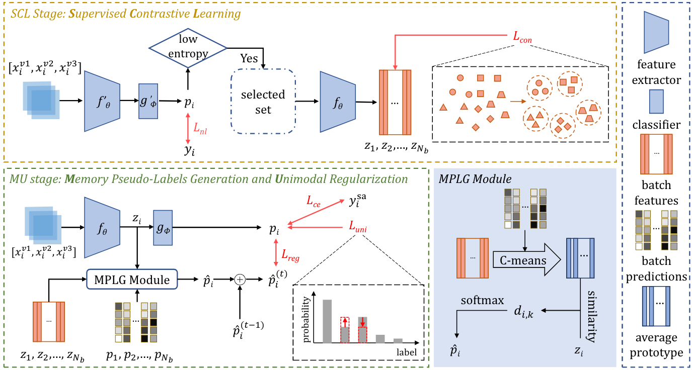 | Xianze Ai†, Zehui Liao†, and Yong Xia* URL: Combating Label Noise for Lung Nodule Malignancy Grading The 3rd MICCAI Workshop on Data Augmentation, Labeling, and Imperfections (DALI), 2023. [Paper, Code][Oral] |
 |
Zehui Liao, Shishuai Hu, Yutong Xie*, and Yong Xia* Transformer-based Annotation Bias-aware Medical Image Segmentation MICCAI, 2023. [Paper, Code][Early Accept] |
| 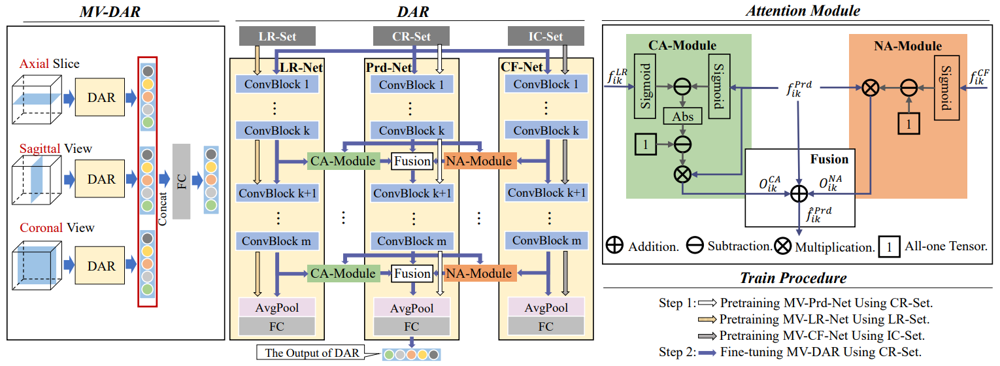 | Zehui Liao†, Yutong Xie†, Shishuai Hu, and Yong Xia* Learning from Ambiguous Labels for Lung Nodule Malignancy Prediction IEEE Transactions on Medical Imaging, vol. 41, pp. 1874-1884, 2022. [Paper, Code] |
In-Context Medical Image Segmentation
| 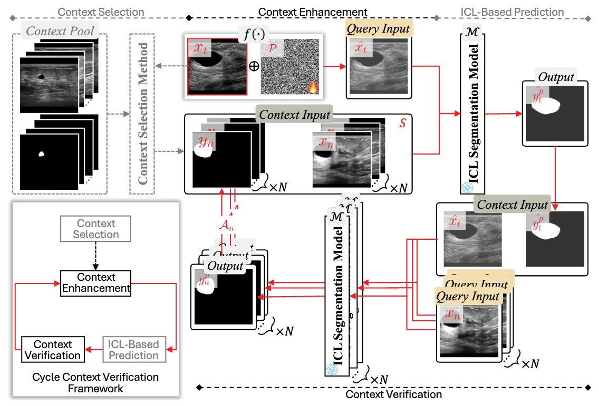 | Shishuai Hu†, Zehui Liao†, Liangli Zhen, Huazhu Fu*, and Yong Xia* Cycle Context Verification for In-Context Medical Image Segmentation MICCAI 2025. [Code] |
Domain Adaptive Medical Image Segmentation
| 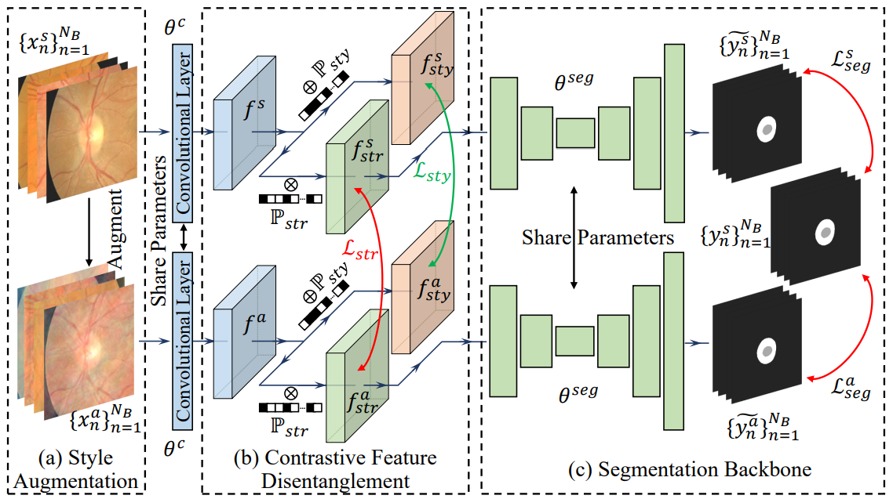 | Shishuai Hu, Zehui Liao, and Yong Xia* Devil is in Channels: Contrastive Single Domain Generalization for Medical Image Segmentation MICCAI, 2023. [Paper, Code][Early Accept] |
 |
Shishuai Hu, Zehui Liao, and Yong Xia* Prompt Learning based Source-free Domain Adaptation for Medical Image Segmentation Pattern Recognition, 2025. [Paper, Code] |
| 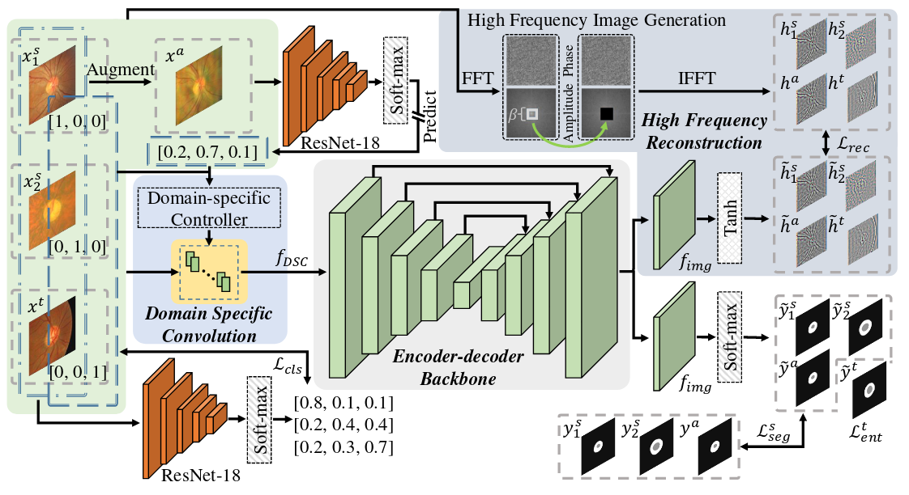 | Shishuai Hu†, Zehui Liao†, and Yong Xia* Domain Specific Convolution and High Frequency Reconstruction based Unsupervised Domain Adaptation for Medical Image Segmentation MICCAI 2022, In Press, 2022. [Paper, Code] |
| 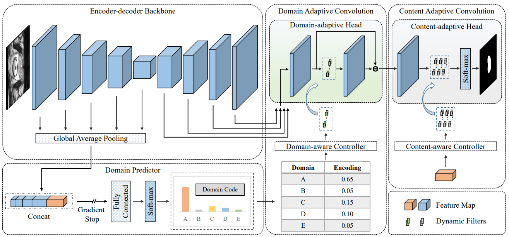 | Shishuai Hu†, Zehui Liao†, Jianpeng Zhang, and Yong Xia* Domain and Content Adaptive Convolution based Multi-Source Domain Generalization for Medical Image Segmentation IEEE Transactions on Medical Imaging, vol. 42, pp. 233-244, 2023. [Paper, Code, Project] |
Volumetric Medical Image Segmentation
 |
Shishuai Hu, Zehui Liao, Yiwen Ye, and Yong Xia* Boundary-Aware Network for Kidney Parsing MICCAI 2022 Workshop, Lesion Segmentation in Surgical and Diagnostic Applications, 2023. [Paper, Code, Project] [Rank 2-nd in KiPA22, Rank Top-5 in AMOS22] |
Patents
- Yong Xia, Zehui Liao, and Yutong Xie. A Medical Image Classification Method for Learning with Ambiguously-labeled Data. Chinese Patent ZL202110203910.X, issued on 2022/11/29.
- Yong Xia, Zehui Liao, and Yutong Xie. A Self-supervised Pretraining Method for Downstream 3D Medical Image Segmentation Tasks. ZL 2021 1 1523320.1, issued on 2024/3/15.
Awards and Honors
- [2024.11] • National Scholarship for PhD Students
- [2023.10] • Outstanding Graduate Student of Northwestern Polytechnical University
- [2022.10] • First-class Academic Scholarship for Doctoral Students
- [2022.09] • Innovation Award in Kidney Parsing Challenge
- [2022.08] • Second Place in CarOtid vessel wall SegMentation and atherosclerOsis diagnosiS (COSMOS) Challenge
- [2022.08] • Top-5 in Multi-Modality Abdominal Multi-Organ Segmentation (AMOS) Challenge
- [2022.08] • Second Place in Kidney Parsing Challenge
- [2022.08] • Second Prize in MICS Student Presentation Challenge
- [2022.09] • University Graduate Fellowship, Northwestern Polytechnical University
- [2020.09] • University Graduate Fellowship, Northwestern Polytechnical University
- [2019.08] • First Place in Pro. SimuroSot-Miro Middle at 24th FIRA RobotWorld Cup 2019
- [2019.08] • First Place in Pro. Air Autonomous Race Pro at 24th FIRA RobotWorld Cup 2019
- [2018.10] • First Place in Pro. Microsoft Wheeled-SimuroSot (11 vs. 11) at 20th China Robotics and Artificial Intelligence Competition 2018
- [2018.08] • First Place in Pro. SimuroSot-Miro Middle at 23rd FIRA RobotWorld Cup 2018
- [2018.08] • First Place in Pro. SimuroSot (5 vs. 5) at 18th National Robot Championship and 9th International Humanoid Robot Olympic Competition 2018
- [2018.09] • University Undergraduate Fellowship, Northwestern Polytechnical University
- [2017.09] • University Undergraduate Fellowship, Northwestern Polytechnical University
Reviews
- Conference Review
- MICCAI 2023, MICCAI 2024, MICCAI 2025
- PRCV 2023
- Journal Review
- IEEE-TMI/TNNLS/JBHI
- AAS-CN (ACTA AUTOMATICA SINICA)
- BSPC
Academic Activities
- 8-12 October 2023: DALI@MICCAI 2023, Vancouver, Canada (Oral)
- 8-12 October 2023: MICCAI 2023, Vancouver, Canada (Poster)
- 22-24 August 2022: VALSE 2022, Tianjin, China (Poster)
- 11-13 August 2022: MICS 2022, Nanjing, China (Student Challenge Presentation)
- 25-26 October 2021: MAI workshop 2021, Online (Oral)
Acknowledgement: This page is based on this template
by Yicheng Wu